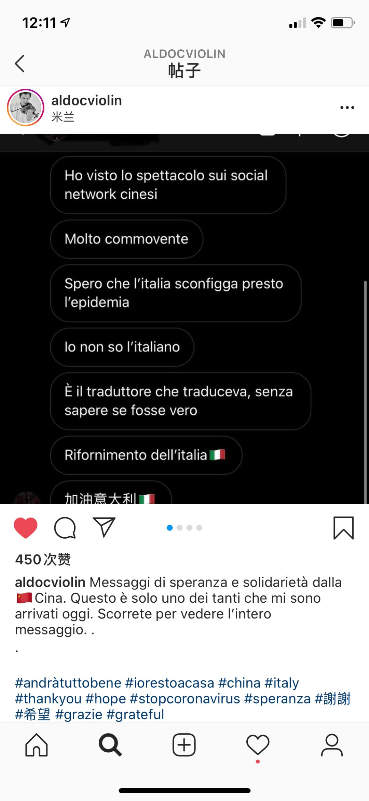
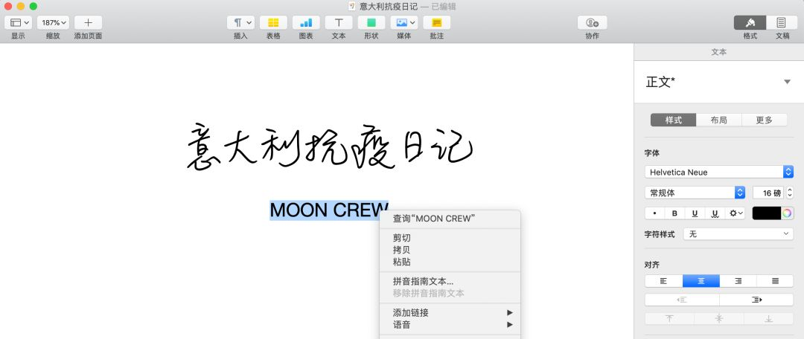

德黑兰疫区十日记
原文链接 备份链接 编者按 本文是作者自2月21日至3月1日在伊朗首都德黑兰写下的生活日记。 对比其他国家，伊朗异常紧张的国际处境、多年制裁下脆弱的经济和深入到社会生活方方面面的宗教传统，都影响着它面对疫情的态度。从2月20日晚间伊朗首次 …

今天是3月16日，月相为49%的下弦月。
It is March 16 with a 49 percent of Last Quarter.
距离新月还有 8 天。
There are 8 days until New Moon.
文 || 郭容华
_容华老师定居于意大利佛罗伦萨。
_
如今，她因意大利的锁国政策滞留在佛罗伦萨家中隔离。
笔者是一位暴躁的少女。
我抱着雪白的床单坐在客厅里，隔几秒就要看一次手机。随着钟表指针嗑哒嗑哒的转，我的心脏也在胸腔中跳动得愈发强劲。
厨房的落地窗完全打开，大概从院子里吹来了清风，而我只能通过桌布的拂动来观赏这片新鲜空气。
门铃响起时我几乎弹了起来。
和她见面前我踌躇了很久，因为在家门口，我如果戴着口罩，在意大利人看来估计挺不尊重的。所以我已经准备好了一套口罩科普的发言稿。
就算欧盟各国为了争夺口罩在新闻上隔空对骂，碍于“吃不到葡萄就说葡萄酸”和“不患贫而患不均”的心态，政府也不愿意承认口罩的用处。
但所有专家也跟媒体站在了同一战线，声称勤洗手可以抵抗呼吸传染病，这让人不禁有些费解。我为他们编了另一种解释：因为白种人鼻梁太高，口罩戴上也依然漏风，所以口罩不能帮鼻梁太高的人种隔绝病毒。
像我这种鼻梁低的黄种人就比较幸运了，能利用脸平的优势享受过滤空气。
我戴着口罩给她开了门，果然面对的是一张裸脸，还是个素颜美女呢。
住我楼上的邻居在阳台上晾床单，不小心掉进了我家院子里，当她知道我是中国人之后，大概经历了两天的心理挣扎，今天终于过来取床单了。
我把床单递给她，还附赠了一罐让我闻见就反胃的香菇榨菜：“这是一种中国香菇酱料，可以用来配主食，味道有点像腌橄榄。”
我不是为了恶心她，这个味道意大利人真的很可能会喜欢。
她的表情仿佛很惊喜：“超级感谢！我已经断粮了一周了！”
看来最近意媒对中国的吹捧洗脑还是很奏效的。一个月前，当我还敢出门时，每天跟意大利人的对话都是明撕暗踩，已经很久没感受过这种友好了。
意大利全国都封锁了，出门需要填申请表。虽然这措施来得迟，但在这场欧洲政府的比烂大赛里，至少意大利让出头筹了。
“我不是为了制造恐慌。”——我引用了所有专家政客发言前必要说的一句话，接着说：“我戴口罩只是一种预防措施。”
但我知道戴口罩当然是制造恐慌，尤其是在没有人能买到口罩的时刻。而所有人最担心的便是制造恐慌，这是意大利目前十恶不赦的重罪。
“我不是为了制造恐慌。”专家说：“新冠状病毒真的比普通流感要严重，大家应该重视起来。”
“我不是为了制造恐慌。”政客说：“只是希望大家少去人群密集的聚会，国家不会为一个流感限制你们自由的。”
除了围剿中国人之外，意大利人把他们全部对病毒的提防心，都放在了提防媒体上。就好像病毒是通过精神传播的，只要有一篇新闻敢描述新冠状病毒的严重性，读者中就会增加二十个感染人。
这绝对有心理学依据，当你把注意力从伤口上移开，你的大脑感知到的痛感也会减弱。同理，当你不去关注新冠状病毒，你也就不会被感染了。
我对二月份的欧洲新闻印象深刻，大概有那么几个类似德意法西各国科学院的机构，都说新冠状病毒和流感类似，所有流感都有一定的死亡率，普通流感可能是患病者中死亡0.3%，新冠的病死率大概是0.5%，所以不用对这种特殊流感太紧张。
我在留言中写下了困惑：中国的新冠病死率一直是2%左右，难道病毒对不同人种的杀伤力差别这么大？
专家答曰：因为中国的医疗条件不行。
而我打字时是3月15号的下午，意大利确诊人数21727人，死亡1441人，病死率是6.6%。
这个骇人的数字，大概不能归因于意大利医疗条件太差，这个国家有顶尖的治疗病毒肺炎的技术；仅因为人口结构的老龄化也不正确，医疗资源的紧缺肯定是重要原因。
意大利政府直言不讳：现有的医疗条件实在有限，只能优先治疗年轻人了，希望老年人自己做好隔离措施。
自从那只罪恶的蝙蝠被摆上餐桌，事态发展至今，真是有太多令人跌破眼界的故事了。
当我逐渐意识到了自己的无用后，发现本人捐的钱也捐不到武汉，给意大利买的口罩也运不过来，唯一能干的，大概只有戴口罩给欧洲人民制造一点恐慌了。于是那些无用的情绪，就像我家的方便面存粮一样被消耗一空。
每天上午街道都有来回巡逻的车，开着喇叭广播注意事项，毫无感情的电子男声非常洗脑，像赛博小说的情节，把我带进半梦半真的困境中。
我谢绝了邻居企图还礼给我的烤土豆，她又问：“你参加今天晚上的音乐会吗？”
△ “阳台音乐会”的其中一个节目。
这是意大利人民最近想出来的社交方式，每天晚上六点，家家户户都会站在阳台上用音响放嗨歌。因为意大利的居民楼都在六层以下，而且街道很窄，阳台都是户外的，离得很近，可以达到隔空蹦迪的效果。
“我当然会去听你们的音乐会。”

△ 在“阳台音乐会”中表演的艺术家收到了大量来自中国的留言。他在IG上表示感谢。
她笑着说好，走前留下了意国名言：“La vita continua come sempre.”——生活总要继续。
很难去批评这种苦中作乐的精神，说它是坚韧还是逃避？生活已经如此不易。
我的同学都回国了，东欧室友也在一个月前撤回了东欧，我独自守在这片异国土地，不是为了在前线同病毒抗争，只是担心今年的毕业证。这世界太令人费解了，凭我愚钝的脑壳实在不能参透。
我只希望每一条生命都被善待，不会因为年龄或者阶级被放弃。
这些国家因为愚蠢、傲慢、偏见种种原因，也许政客们没有经验，医疗系统和财政难以支撑，我不想再指责他们，只要竭力拯救每一条生命就好。至于某些政党那套为了经济发展、要老人提前一点自然死亡的言论，滚吧。

郭容华往期文章
杂文 || 女艺术家的崛起，是风口上的猪吗？
杂文 || 暴力与性，难以忍受的行为艺术
非虚构 || LVMH：奢侈品与艺术的世纪之战
小说 || 艺术家要枪杀一个女人
杂文 || 阴谋论：据说艺术家用椅子洗钱？
责任编辑：沙士淳。
排版、封面图、首图：白清扬。

长按二维码向我转账
受苹果公司新规定影响，微信 iOS 版的赞赏功能被关闭，可通过二维码转账支持公众号。
原文链接 备份链接 编者按 本文是作者自2月21日至3月1日在伊朗首都德黑兰写下的生活日记。 对比其他国家，伊朗异常紧张的国际处境、多年制裁下脆弱的经济和深入到社会生活方方面面的宗教传统，都影响着它面对疫情的态度。从2月20日晚间伊朗首次 …
原文链接 备份链接 对于撒丁岛人来说，这是一个平凡的周末。 撒丁岛，地中海的第二大岛屿，典型的地中海气候，夏季炎热干燥，冬季温和，这个冬天尤其温暖少雨。 ——1—— 周五晚，我约了朋友去吃龙虾，吃到嗨处，抬头一看，餐厅座无虚席，席间一声比 …
原文链接 备份链接 体坛周报全媒体驻意大利记者 王勤伯 （一）Pandemic 任何一种学习都是不断积累不断混淆又不断清晰和进步的过程。病毒学如此，语言也不例外。 过去1、2个月里，我一直担心着世卫组织谭老师把Covid-19提升为“大流 …
原文链接 备份链接 以下文章来源于我们来补课 ，作者寒潭清 [我们来补课 成人版十万个为什么，重拾你对世界的好奇心](#) 病毒在地球上存在了数十亿年，早已构成生态系统不可或缺的一部分，想彻底消灭病毒比消灭全部虫子更不现实，此次新冠肺炎疫 …
原文链接 备份链接 作为一个科学大国，英国是如何应对新冠疫情的？他们是否能走出一条和中国不同、社会成本更低而行之有效的防疫之路？为此我们采访了流行病学专家、牛津大学终身教授陈铮鸣。 英国于 1 月底确诊第一位来自中国的输入性新冠患者。截 …